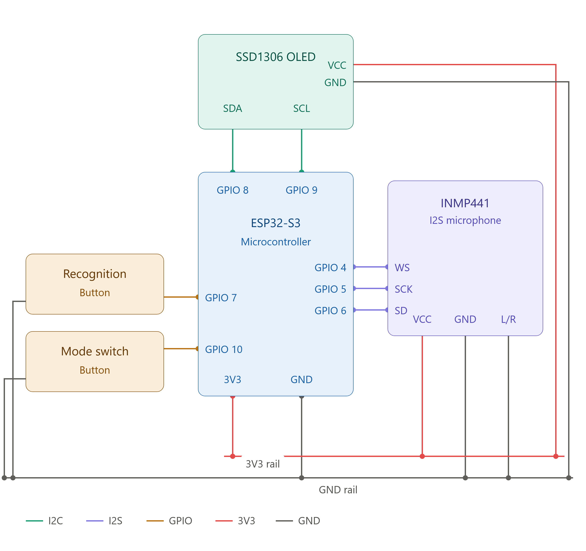
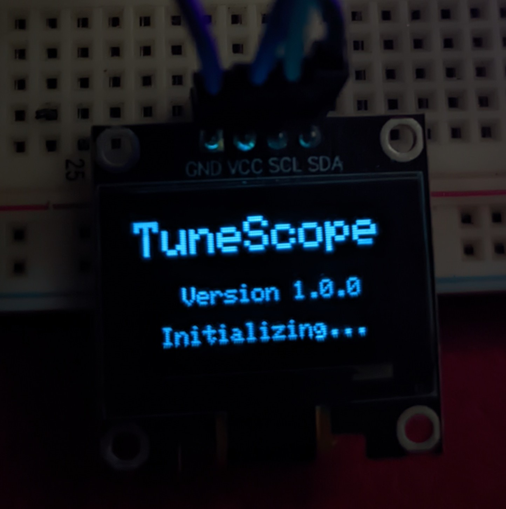
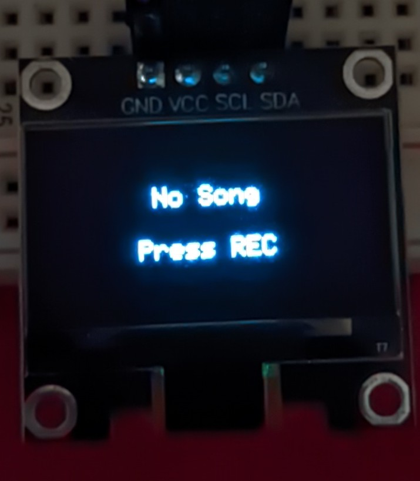
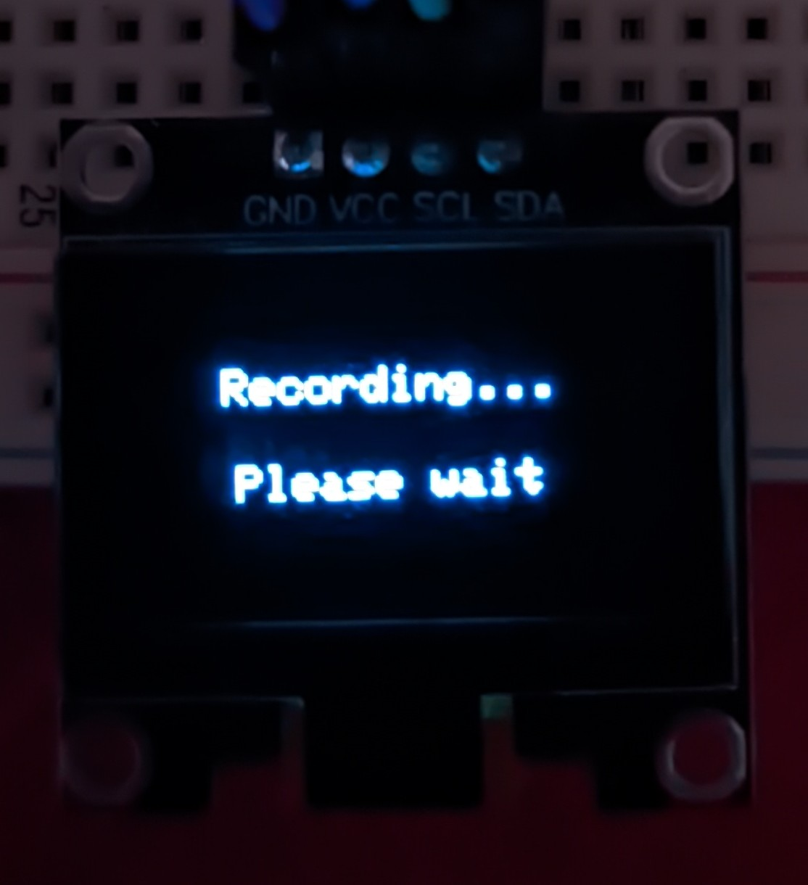
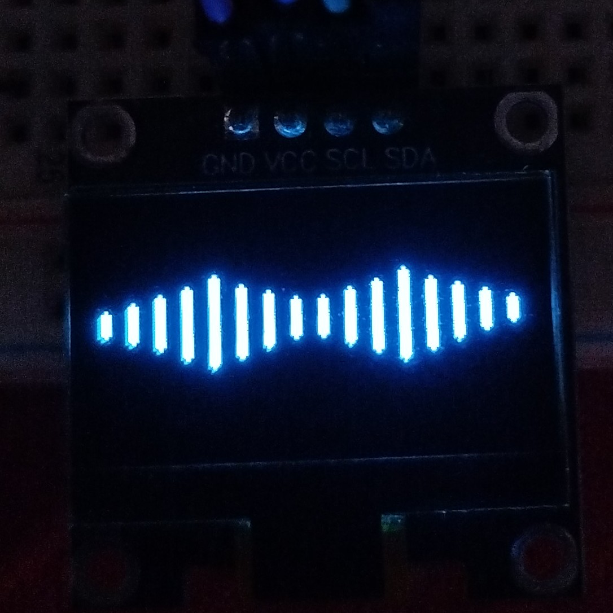
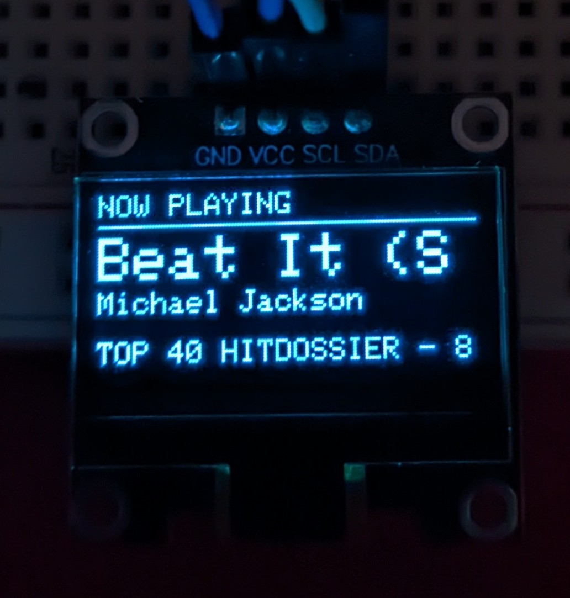

Why I Built TuneScope
Music recognition has become a feature we take for granted on smartphones, but I wanted to understand what it would take to build a dedicated embedded device capable of performing the same task. Instead of relying on a mobile application, I set out to create a standalone system that could listen to nearby music, identify the song over Wi-Fi, and display the results on a small OLED screen.
Beyond the final functionality, the project was an opportunity to explore several areas of embedded systems development simultaneously: digital audio acquisition, I²S peripherals, memory management with PSRAM, HTTPS networking, REST APIs, JSON parsing, graphical user interfaces, and modular firmware architecture.
Rather than building a proof of concept, I wanted the firmware to be maintainable and scalable. Throughout development I focused on separating hardware drivers, recording, networking, recognition, and display logic into independent modules so that future features could be added without major architectural changes.
Design & Architecture
Instead of implementing everything inside main.cpp,
the firmware was designed around independent modules with
clearly defined responsibilities. Each subsystem owns its own
resources and communicates through well-defined interfaces,
making the project easier to maintain and debug.
- Hardware Layer — GPIO, I²S microphone, OLED display, buttons and Wi-Fi peripherals.
- Application Layer — Recorder, WAV generator, song recognizer, DisplayManager and Visualizer.
- Presentation Layer — OLED layouts, status screens, scrolling titles and user interaction.
Key Design Decisions
- Separated display rendering from recognition logic using a dedicated DisplayManager.
- Used PSRAM to store audio recordings rather than internal RAM.
- Implemented a modular architecture so every subsystem could be developed and tested independently.
- Designed the recognition workflow as an explicit state machine instead of using multiple boolean flags.

Components & BOM
| Component | Qty | Purpose |
|---|---|---|
| ESP32-S3 N16R8 | 1 | Main controller responsible for audio capture, networking, OLED rendering, and music recognition. |
| INMP441 I²S Microphone | 1 | Captures nearby music as 16-bit PCM audio for recognition. |
| SSD1306 128×64 OLED | 1 | Displays system status, song information, and the real-time audio visualizer. |
| Momentary Push Button | 2 | One button starts recognition while the second switches between display modes. |
| USB Type-C Cable | 1 | Powers the device and uploads firmware. |
Prototype Gallery





Code & Technical Details
The firmware is organized into independent modules that separate hardware drivers, application logic, networking, and user interface rendering. Audio captured by the INMP441 microphone is stored in PSRAM, converted into a WAV file, uploaded securely to the AudD Music Recognition API, and the returned metadata is parsed before being displayed on the OLED. A dedicated DisplayManager controls every screen while the Visualizer continuously renders real-time audio levels without interfering with the recognition workflow.
Designing the firmware this way made it possible to develop and debug each subsystem independently while keeping the application scalable for future additions such as FFT visualizations, OTA updates, and offline audio analysis.
RecognitionState state = Recording; Recorder recorder; recorder.startRecording(); WavFile wav = WavGenerator::build(recorder.buffer()); SongInfo song = recognizer.recognize(wav); displayManager.showSong(song);
Failures & Fixes
Final Performance
TuneScope successfully demonstrates that a standalone embedded device can perform cloud-based music recognition while providing a polished user experience. The completed system records nearby audio, uploads it securely over Wi-Fi, identifies the song using the AudD Music Recognition API, and presents the results on an OLED display alongside a responsive real-time audio visualizer.
- Microcontroller: ESP32-S3 N16R8
- Recording: 16-bit PCM @ 16 kHz (5 seconds)
- Recognition: AudD Music Recognition API
- Display: 128×64 SSD1306 OLED
- Networking: HTTPS over Wi-Fi
- Architecture: Modular C++ firmware
What I Learned
TuneScope became much more than a music recognition project. It fundamentally changed how I approach embedded software development. Earlier projects typically focused on making features work, whereas TuneScope required thinking about software architecture, ownership of resources, module boundaries, and long-term maintainability from the beginning.
One of the biggest lessons was realizing that clean architecture matters just as much as functional code. Early versions tightly coupled recording, networking, and display updates, making even small changes difficult. Refactoring the firmware into independent modules and introducing a dedicated DisplayManager dramatically simplified future development while making the codebase easier to understand and debug.
This project also gave me practical experience with digital audio processing, I²S peripherals, PSRAM memory management, HTTPS communication, REST APIs, JSON parsing, and designing responsive user interfaces on resource-constrained embedded hardware. It reinforced the importance of incremental development and building reliable foundations before adding new features.
What I'd Do Differently
- Design the event-driven architecture from the beginning instead of refactoring towards it later.
- Add automated testing for individual firmware modules.
- Implement OTA firmware updates and persistent settings storage.
- Explore local audio analysis techniques to reduce reliance on cloud recognition.